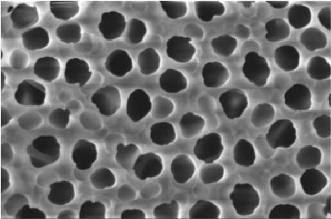

Analysis of a Porous Surface
Surface Analysis
Rainier Barrett and Eric Holmgren
April 27, 2017
The Surface
Goals
- Determine average pore size.
- Image the profile of the pore walls.
- Determine chemical composition of the pore walls.
This Time: Metadynamics and EDM
Metadynamics
Metadynamics: "filling up" energy wells
$U'(s,t) = U(s) + V(s,t)$, where $V(s,t)$ is the bias.
$V(s,t+\Delta t) = V(s,t) + h\exp{\left(\frac{(s-s(t))^2}{2\sigma ^2}\right)}$, $V(s,0) = 0$.
Here, $h$ and $\sigma$ are fixed parameters.
EDM
An expansion on Metadynamics, using tempering to converge to a target surface.
$V(s,t+\Delta t) = V(s,t) + h\exp{\left(\frac{(s-s(t))^2}{2\sigma ^2}\right)}$.
But now, $h$ changes based on the target surface: $h = e^{-\bar{V}/k_B \Delta T}e^{F_t(s)/k_B T}$, where:
$\bar{V}$ is the average bias, $\Delta T$ is a parameter, and $F_t(s)$ is the target energy profile.
Results
EDM

Metadynamics:

Extreme Case

Getting Ready for EDM
Wrote a pseudo-parallelized 2D gaussian adding function in Python.

Looking Forward
Future Plans
- Implement original EDM in parallel on GPU.
- Write a paper about it.
- Begin applications of newly-enhanced EDM -- AMPs?